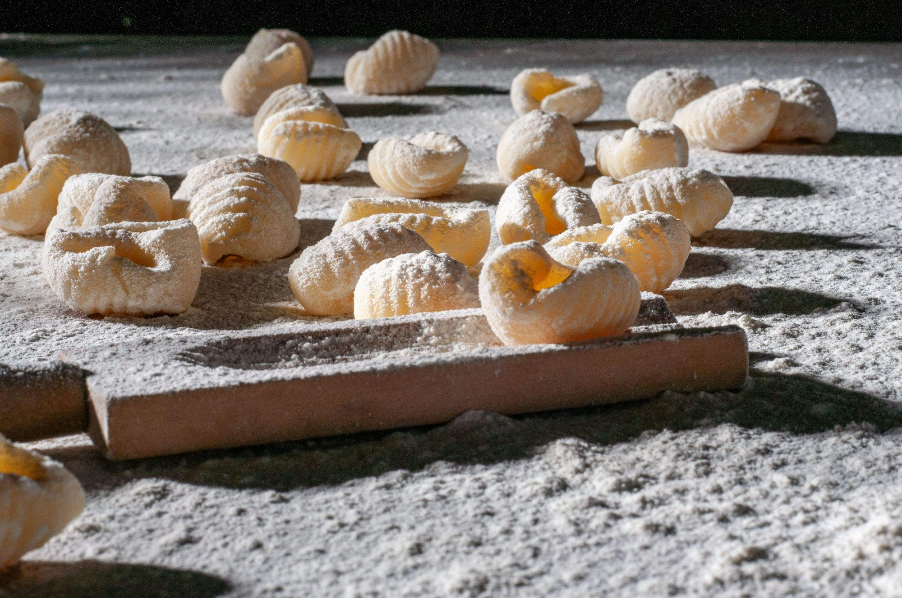

Gnocchi are traditional Italian dumplings, most commonly made from potatoes, flour and eggs. Their origins date back centuries, when similar dumplings were prepared using flour, bread or semolina. Following the introduction of potatoes from the Americas, potato-based gnocchi gradually became one of the most beloved dishes in Italian cuisine, with numerous regional variations.
Having grown up in Veneto, gnocchi remind me of the warmth and simplicity of homemade Italian cooking. Their soft, delicate texture and the tradition of preparing them by hand evoke a sense of nostalgia. Made with just a handful of humble ingredients, gnocchi are a wonderful example of how simplicity can result in something truly delicious.
In Veneto, gnocchi are traditionally served with melted butter and sage, tomato sauce, or butter, sugar and cinnamon, a combination rooted in local culinary traditions. Their delicate flavour also makes them suitable for international interpretations, such as Japanese-inspired miso butter gnocchi, Indian-inspired creamy curry sauces or Mediterranean combinations with roasted vegetables and feta. Modern variations include pan-fried crispy gnocchi, pumpkin or beetroot gnocchi, and gnocchi served with pistachio pesto or creamy truffle sauce.
Servings: 4
Preparation time: 30 minutes
Cooking time: 40–45 minutes